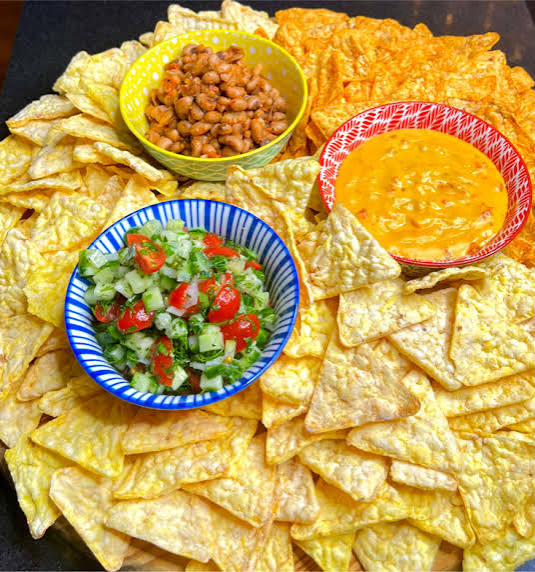

<!DOCTYPE html>
<html>
<head>
  <title>Types Of Nachos</title>
<link rel="stylesheet" href="styles.css">
</head>
<body>
</body>
</html>
<nav>
    <a href="index.html">Nachos</a>
    <a href="page2.html">The History Of Nachos</a>
    <a href="page3.html">Types Of Nachos</a>
    <a href="page4.html">How Cheese Is Made</a>
    <a href="page5.html">How Tortillas Are Made</a>
    <a href="page6.html">Guacamole Nachos</a>
    <a href="page7.html">Pico De pollo nachos</a>
    <a href="page8.html">Conclusion/Works Cited</a>
</nav>
<h>Types of Nachos</h>
<p>Nachos come in many different styles, and each restaurant puts its own twist on this popular dish. Some focus on classic toppings like seasoned beef and melted cheese. Others experiment with different meats, sauces, and even seafood to stand out. This list of nachos shows how creative restaurants can be with a simple plate of chips.</p>
<p>Fast-food chains like Taco Bell offer Nachos BellGrande and loaded beef nachos. These options are quick, affordable, and packed with familiar flavors like ground beef, cheese sauce, tomatoes, and sour cream. They are designed for people who want a satisfying snack or meal without waiting long or spending too much.</p>
<p>Casual restaurants such as Yard House, Hard Rock Cafe, and Pink Taco take nachos to a higher level. Yard House serves chicken nachos as well as poke nachos, which use raw, marinated fish for a fresher, lighter taste. Hard Rock Cafe offers “legendary” nachos with different proteins, including chicken, steak, and pulled pork, making them feel more like a full meal than just an appetizer.</p>
<p>Other places add bold Mexican and tropical flavors. Pink Taco includes options like chicken nachos and carne asada nachos, featuring grilled steak and more traditional toppings. Rosa Mexicano is known for its red chile chicken nachos, which bring a spicy, rich sauce to the dish. Margaritaville’s volcano nachos pile ingredients high, creating a dramatic, shareable plate.</p>
<p>Together,</p> 
 